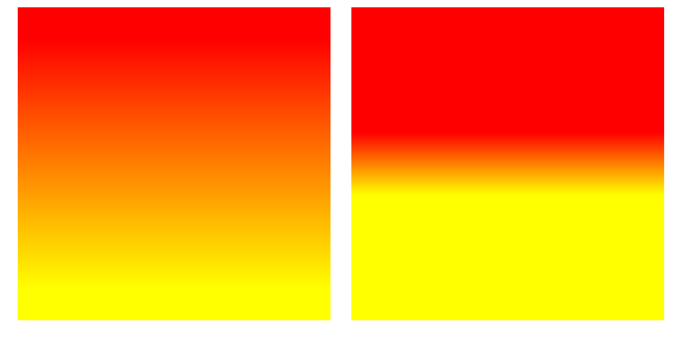
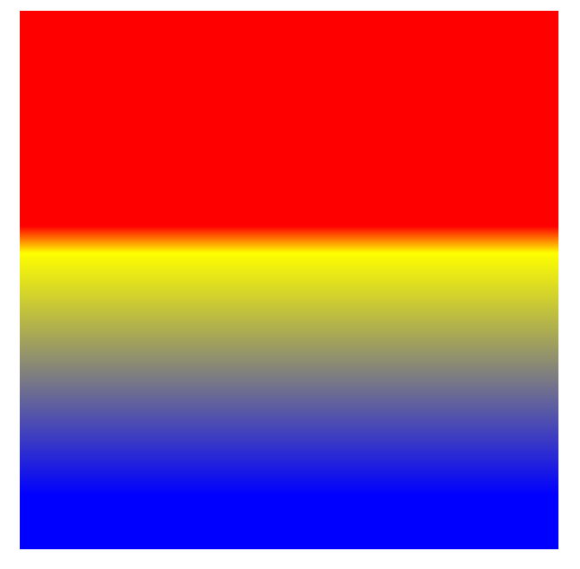
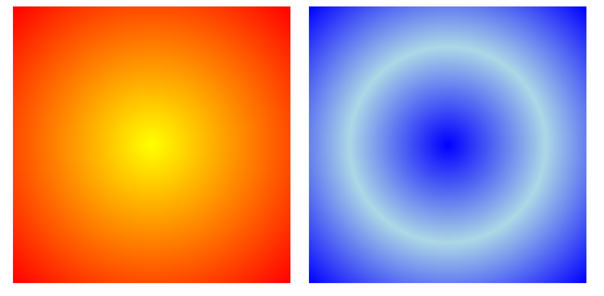
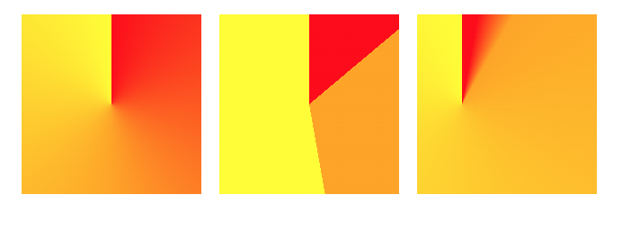
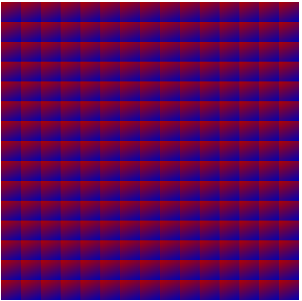
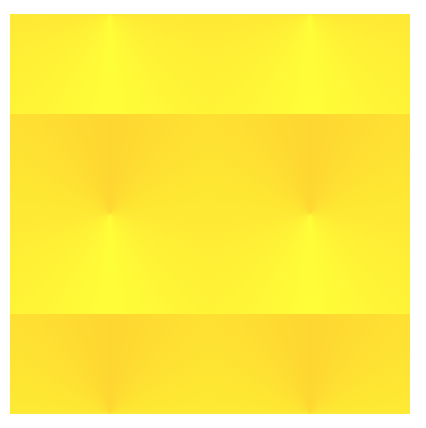

Your name: Gabriela Johnson
Course Info Questions
Who is this course for? (10 points)
Identify the learner(s) in your course. Describe them in detail. What should they know coming into this course? Identify any prerequisites.
A learner in this course should have a passion for web development and want to bring their artistic vision to life through the browser. They should know that this course goes into detail about gradients and animation and be ready to combine both to create unique webpages. Below are the technical prerequisites for this course:
- Should have a competent or proficient understanding of HTML and CSS. They should not need a teacher's assistance in understanding this course, and should already be aware of the existence of CSS gradients and animation.
- An account on codepen.com so they can create and save their coding exercises. The learner can sign up for an account here.
Demographics: ages, geographic location, employment status, etc. Are they required to take this course or is it something fun to do in their free time?
The learner should be above the age of 12 and have the suggested prerequisites to take this course. This course does not need the learner to be living in a specific location or have a specific employment status. This course can be taken for fun to learn about how to create CSS animations and bring fun ideas to life through the web, as well as to assist in enhancing their existing skills in creating websites.
What are your learner's goals for taking this course?
The learner’s goals are to expand their knowledge of CSS to create compelling and moving graphics. They can use this course to pursue a career in frontend web development, or just for their own personal gain. For example if they have a hobby in creating CSS art, or would like to make other web projects for themselves.
What are your goals? (10 points)
What are your goals in teaching this material? These may be overt, like course objectives, or covert, like gaining technological confidence.
I would like for my learner to be able to come away with new skills in CSS they didn’t have before. When my learner has an idea for a cool web page or experience they would like to create, I hope this course provides them with the skills they need to make it happen.
I am very passionate about CSS art and creating interactive and compelling web experiences for people. I believe creating a course and explaining what I already know will solidify my knowledge and confidence in this material. I believe I will learn even more about this topic since I will have to research all of the details necessary to be confident in creating CSS gradients and animation.
What should learners remember 2-3 years after taking your course?
If the learners do not remember the syntax to create CSS gradients or animations, I hope they remember conceptually how CSS can be used to affect web pages. They should be able to remember the positive impact gradients and animation can have on a composition or webpage.
How do you know they mastered the material? (10 points)
Describe what they can do, explain, show, or demonstrate that would indicate they've mastered the material you presented.
This does not mean "the learner will write a 5 paragraph essay about..." This means something else, like "the learner will know which HTML tags to mark up a given document, and explain their tag choices correctly."
The learner should:
- Be able to explain and know how to create linear, radial, conic and repeating gradients and apply that to an HTML element.
- Know, understand and use the background properties background-size, background-position and background-repeat.
- Be able to apply not just one gradient to an HTML element, but layered gradients as well.
- Know how to create a keyframe animation and apply it to an HTML element.
- Be able to use all of the transform properties of CSS on an element, such as translate, rotate, scale and skew.
- Be able to create a web page using multiple gradients and animations on multiple elements.
Creating/identifying materials (70 points)
Basic Course information
A title
Creating Art with CSS
A description (usually around 1 paragraph)
Description
This course will teach you the endless possibilities of CSS. We will focus on CSS gradients first, followed by CSS animations. Gradients and animation add dimension and life to a web page that can take it from mediocre to professional. This course will show you the basics you need to create CSS art and fun web experiences, using only CSS. Both of these topics are quite large in scope, so we will just be focusing on the core principles that will help you get started.
List any prerequisite courses or prior learning required
Prerequisites- Knowledge of HTML and CSS (HTML tags, flexbox, colors, CSS properties)
- Account on Codepen, you will be using this to create and save your exercises and project.
Identify what the learner will learn. This may be in the form of course objectives, or bullets describing what will happen in the course.
The learner will learn how to:
- Create linear, radial, conic and repeating gradients and apply that to an HTML element.
- Use the background properties background-size, background-position and background-repeat.
- Be able to layer gradients onto an HTML element
- Know how to create a keyframe animation and apply it to an HTML element.
- Be able to use all of the transform properties of CSS on an element, such as translate, rotate, scale and skew.
A brief biography, describing your qualifications for teaching the material.
BiographyI'm an Interactive Multimedia major with a minor in Computer Science from The College of New Jersey. I’ve been coding for about 4 years now and specialize in CSS art. I have experience designing and maintaining websites for restaurants, science labs and other businesses and have done so for over 2 years now. I love creating interactive web experiences for users and telling a story.
A photo of yourself.
Reading, video, and background information
Reading, video, and background information
An announcement or course orientation page, explaining what learners should be working on this week.
Course Orientation Page
Hello students!
Welcome to the course! This week you will be reviewing CSS gradients and animation. There is a lot of ground to cover so please pace yourself, view the completion checklist below to see what you will need to accomplish by the end of this week.
This could be similar to my “Completion Checklist” that I use in class, or an announcement with this information, or something along these lines.
Completion List
- 2 gradient exercises
- 2 animation exercises
- View the CSS Animation video
- Complete the quiz
- Complete the gradient prompt from the graded discussion
- Review the final assignment and submit your proposal to the class discussion for feedback
- At least 2 pages of material. This can be reading, communications, directions, etc.
- At least 1 video
- At least 1 photo, diagram, drawing, or some other image. This might be decorative in nature, or it might relate to the course materials.
- At least 3 links to external sources (web pages, PDFs, Google documents, book listings, etc.)
Creating Art with CSS
We will begin learning about CSS gradients and all of the different types available for use. We will then proceed to learn about CSS Animation and how we can use that to manipulate HTML elements. Play around with the provided examples and make sure you complete all of the exercises at the end of the section.
Note. We use a lot of Codepen examples in this course to help you understand the material. To view the CSS animation examples in action, click "rerun" in the bottom right corner of the pen.
CSS Gradients
Types of Gradients
In CSS we can use gradients to add color and dimension to our HTML elements. There are 3 types of CSS gradients:
- Linear gradients
- Radial gradients
- Conic gradients
You can apply gradients to the background of any HTML element that is visible on the screen. The basic CSS to apply a gradient to a div for example, would be:
CSS:
div{
width:300px;
height:300px;
background: gradient-type(color,color);
}
Linear Gradients
At its most basic, linear gradients display at least 2 colors blending into each other. However, you can control the position of the colors, and the direction that the gradient goes in. This can be used to give a 3D effect or pattern to HTML elements, and can draw attention to certain elements versus others on the web page.
The basic format for a linear-gradient is:
linear-gradient(color,color);
Direction
We can control the direction the gradient is going in by giving it a degree value in the first spot of the gradient function. The degrees you can use range from 0-360deg, you can see how it is used in the example below.
linear-gradient(numberdeg,red,yellow);
Examples
linear-gradient(20deg,red,yellow);
linear-gradient(180deg,red,yellow);
You can also explicitly write where you want the direction of the gradient to go. If you would like the end of the gradient to flow to the top right of your HTML element, you would write for it to go "to top right".
linear-gradient(to top right, red, yellow);
If you would like the gradient to flow straight to the bottom, you would tell it to go "to bottom"
linear-gradient(to bottom, red, yellow);
Position
In gradients, sometimes we don't want to have the colors evenly spread out across the HTML element. We might want one color to start at the top of the element, but the rest of the colors to start much farther from the first color. By writing percentages next to each color, we can position our colors to go where we please.
linear-gradient(red 10%, yellow 90%);
An important thing to note is the level of blending that occurs between colors at different ranges. With one color starting at 10%, and the neighboring color starting at 90%, there will be a good amount of blending between the 2 colors. However, the closer these numbers are to each other, the more minimal the blending, and the line between the two colors becomes sharper. For example, look at the difference between
linear-gradient(red 10%, yellow 90%);
and
linear-gradient(red 40%, yellow 60%);

Here is another example with 3 colors. As you can see, red and yellow have a firm line between them. But, since blue is set at 90% farther away from the yellow, there is a larger amount of blending between blue and yellow.
linear-gradient(red 40%, yellow 45%, blue 90%);

We can also use pixels instead of percentages. For example, if we wanted to create the same gradient effect above, we could do background:linear-gradient(red 120px, yellow 135px, blue 270px); Since the square is 300px long, 120px is 40% of the div, 135px is 45% of the div, and so on.
Here are some examples of gradients using the basic format, as well as the direction and position attributes.
See the Pen Linear Gradients by Gabriela Johnson (@gabrielajohnson) on CodePen.
Repeating Linear Gradients
You can also create a repeating-linear-gradient. By putting numbers next to each color in a repeating-linear-gradient, the gradient will repeat until the end of the element. The closer the numbers are together, the smaller the gradient and the more it will repeat. The opposite is true if the numbers are farther apart, please view the example below.
See the Pen repeating-linear-gradient by Gabriela Johnson (@gabrielajohnson) on CodePen.
Radial Gradients
The radial gradient has its colors expanding from its origin in a circle or ellipse pattern. The origin by default is the center of the HTML element, but you can also change the position of the origin.
The basic format for a radial-gradient is:
radial-gradient(color,color);
Size
You can control the size of the gradient circle by using these 4 attributes below:
- closest-side
- closest-corner
- farthest-side
- farthest-corner
View the codepen below to view the differences. For full explanations of these properties, view this page Radial Gradients.
See the Pen Radila Gradients - closest to farthest side by Gabriela Johnson (@gabrielajohnson) on CodePen.
Origin
The origin of a radial gradient can be changed by first setting the gradient shape as a circle or an ellipse, followed by its location in the HTML element. This location can also be distinguished by descriptive words such as "center", shown below, or by percentages indicating x and y values.
Format:
radial-gradient(x y, color, color);
radial-gradient(shape at x y, color, color);
Examples
- radial-gradient(circle at center, yellow, blue)
- radial-gradient(ellipse at center, yellow, blue)
- radial-gradient(circle at 0% 50%, yellow, blue)
- radial-gradient(ellipse at 20%% 75% yellow, blue)
See the Pen Radial Gradients - Origin position by Gabriela Johnson (@gabrielajohnson) on CodePen.
Repeating Radial Gradients
You can also create a repeating-radial-gradient. This works the same as a repeating linear gradient, where you can use numbers next to the colors to control the amount of times the gradient rings repeat. If the numbers are close together, the rings will be smaller and repeat more. If they are far apart, the rings will be larger and repeat less.
See the Pen repeating-radial-gradient by Gabriela Johnson (@gabrielajohnson) on CodePen.
Conic Gradients
Conic gradients display your chosen colors around an origin point, this is particularly useful for creating pie charts.
To customize a conic gradient you can move the origin of the gradient, and how far the colors extend using deg, grad, turn and rad. When extending the gradients, instead of using a percentage for each color like in a linear gradient, you will use 2 numbers to denote the start and end of the color in the gradient. You can view this example in "Determining Color Range" below. The range of degrees available for use range from 0-360, around the origin of the conic gradient. However, for the first and last color, you can just use 1 number to denote the range. This is because the degrees used in the color after the first color, and the degrees used in the color before the last color, complete the range for that color. Here are the other code formats below.
Standard Conic Gradient
conic-gradient(color,color);
Examples
Determining Color Range
conic-gradient(color start end, color start end);
Examples
conic-gradient(red 20deg 30deg, blue 30deg 100deg);conic-gradient(yellow 90deg, violet 0.75turn 1.0turn, green 300grad);
Changing the Origin
conic-gradient(from 0.75turn at 20% 70%, blue, green, purple);conic-gradient(from 0deg at 25% 50%,red 10rad, orange 30deg, yellow);
See the Pen Conic Gradients by Gabriela Johnson (@gabrielajohnson) on CodePen.
Note. Conic Gradients are not supported in Firefox or Internet Explorer so you will not be able to see them there. For more information please view the browser support for conic gradients page here.
Background Properties
Now that we have reviewed gradients, let us move on to background properties. Background properties are helpful in creating even more creative and interesting compositions. We won't go too in depth into each property in this course, but we will focus on the position, size, and repeat properties.
- background-color: The color used for the background of the HTML element.
- background-image: The image used for the background of the HTML element.
- background-position: Controls the position of the background within the element.
- background-size: Controls the size of the background in the element, usually used to determine if the background should cover the entirety or only a portion of the HTML element.
- background-repeat: Controls if the background repeats horizontally, vertically, both or not at all. The properties used for this are repeat-x,repeat-y,repeat,no-repeat
- background-origin: Controls whether the background image starts from the upper left corner of the padding box, border-box, or content-box
- background-clip: Controls how far the background will extend within or beyond the edge of the HTML element.
- background-attachment: Controls if the background will or will not scroll with the page.
For more information and examples of the use of background properties, please go to this page
The properties background-position, background-size and background-repeat can be particularly useful in implementing drastic changes to a background. Please view the example below of these properties in use.
See the Pen Background properties by Gabriela Johnson (@gabrielajohnson) on CodePen.
Layering Gradients
As you probably saw in the example above, the 4th div uses 2 gradients and background properties to create its T shape effect. Layering Gradients are incredibly useful, and really open up the possibilities for designing your future webpages.
Here is the code format for layering gradients:
background: gradient-type(color,color), gradient-type(color,color), gradient-type(color,color);
As you can see, every gradient is separated by a comma.
Here are 3 things you should take away from layering gradients:
- The first gradient in the list is the one on top
- You can layer any gradient type on top of each other
- Use transparent or less opaque colors in top gradients so you can see the gradients underneath.
Please view the example below and observe how the background properties affect the gradients.
See the Pen Layering Gradients by Gabriela Johnson (@gabrielajohnson) on CodePen.
CSS Gradient Exercises
1. Apply a linear, radial or conic gradient to an HTML element. Use at least 3 colors, and use percentages or pixels to change the position of the colors.
2. Layer at least 2 gradients onto an HTML element. Use either background-size, background-position or background-repeat to further customize the gradient.
CSS Animation
CSS Animations are a great way to add pizazz to any site. There are several animatable properties that you can find listed in the link below such as the background, text color, border radius and other properties of an HTML element. You can also move, rotate and change the shape of the element itself.
Please view the video below for a quick intro into CSS Animation.
Animatable CSS properties List
CSS Animation Format
Below is the basic code format to apply an animation to an element. For the animation property, you can set the name of the animation first, then the duration of the animation in seconds.
div{
width:200px;
height:200px;
animation: changeColor 4s;
}
@keyframes changeColor {
0% {background-color: red;}
100% {background-color: green;}
}
As you can see, the keyframe animation is split up into two frames that occur at 0% and 100%. Since the animation duration is 4s, that means that the frame at 0% will play right when the animation starts, and the frame at 100% will play at the end of the animation. You can add as many frames as you want using percentages. Here are some more examples below.
div{
width:200px;
height:200px;
animation: changeColor 4s;
}
@keyframes changeColor {
0% {
background-color: red;
}25%{ #1 second mark
background-color: yellow;
}75%{ #3 second mark
background-color: blue;
}100% {
background-color: green;
}
}
div{
width:200px;
height:200px;
animation: changeColor 9s;
}
@keyframes changeColor {
0% {
background-color: red;
}33%{ #3 second mark
background-color: yellow;
}66%{ #6 second mark
background-color: yellow;
}100% {
background-color: green;
}
}
Animation properties
You can use these properties below to control the timing, length and other aspects of your animation. You would place these properties inside the CSS of the element you are animating.
- animation-name: The name of the animation.
- animation-duration: How long the animation lasts.
- animation-delay: How many seconds pass before the animation starts.
- animation-iteration-count: How many times the animation plays.
- animation-direction: Determines whether the animation plays forwards, in reverse, alternate(forwards then backwards) or alternate-reverse(backwards then forwards).
- animation-timing-function: Determines the speed curve the animation plays at.
There are several of these properties:
- ease - (Default setting) Animation begins slowly, quickens, then ends slowly
- linear - Same speed throughout
- ease-in - Slow beginning
- ease-out - Slow end
- ease-in-out - Slow beginning and end
- cubic-bezier(n,n,n,n) - Custom easing function, different numbers in each slot denote how fast or slow the animation will go at that point in the animation
Other properties include step-start, step-end, and steps(n,n), but we will not be covering them in this course.
- animation-fill-mode: Determines what the element will look like before and after the animation.
- Forwards: The element will keep the stylings from the end of the animation.
- Backwards: The element will keep the stylings from the beginning of the animation.
- Both: The element follows the rules for both forwards and backwards.
- animation: Instead of writing out all properties individually, you can use this property as a shorthand. The properties would go in this order:
animation: name duration timing-function delay iteration-count direction fill-mode play-state;
CSS Transform
Transforming elements allows you to move, rotate, and change the size and visual look of an element. Here are the 4 different transform properties below.
- translate
- rotate
- scale
- skew
Note. In all of the examples below, I will also be animating the background-color and border-radius of some of the elements so you can also be exposed to other animatable properties and how they work.
Translate
The translate function moves an element left, right, up, down, forward and backward. Put differently, along the x, y and z axis.
Here are the 5 translate functions
- translate(x,y,z);
- translate3d(x,y,z);
- translateX(value);
- translateY(value);
- translateZ(value);
Note: TranslateZ moves the element forwards and backwards. However, to see this effect, the perspective property needs to be applied to the parent element of the element you're trying to animate. This is because the perspective property creates a 3d space.
For example, let's say we set the perspective to 600px. Since the untransformed HTML element starts at the center of the x,y,z axis, its coordinates are currently at 0. That means, a perspective of 600px would set the user viewing the webpage 600px away from 0, or the HTML element.
If you apply translateZ(100px) to the element, it will now move forward 100px towards the user, becoming bigger along the provided 600px perspective length.
Please click "rerun" to view the example below.
See the Pen Translate by Gabriela Johnson (@gabrielajohnson) on CodePen.
Rotate
The rotate function can rotate the element along the x, y and z plane. You can use degrees to control the rotation. Please click "rerun" to view the example below.
See the Pen ExPvraR by Gabriela Johnson (@gabrielajohnson) on CodePen.
Scale
Instead of decreasing the size of the shapes by percentages like we use in other functions, we use numbers. If you were to scale an element using scale(1), the element would stay the same size. If you wrote scale(2), the element would double in size by its width and height. Similarly, if you used -1 or -2 to denote the size, the scale would be the same, but the element would reverse itself.
If you would like to just scale the width of the element larger, you would use either scaleX(2) or scale(2,1). The same concept applies for changing the height.
The format for all 3 scale functions are below.
scaleX(x)
scaleY(y)
scale(x,y)
Please view the examples of scale in action below:
See the Pen Scale by Gabriela Johnson (@gabrielajohnson) on CodePen.
Skew
The skew function skews the html element by its x and y values. You can use the number measurements deg, turn and, rad to manipulate the skew. Please view an example of how to use skew below, and how it makes the element appear.
See the Pen Skew by Gabriela Johnson (@gabrielajohnson) on CodePen.
Multiple Changes in an Animation
You don't have to perform each transform property one at a time, you can actually put all of these 4 properties above on the same line. View the example below to see a div translate and rotate at the same time.
See the Pen Multiple transforms by Gabriela Johnson (@gabrielajohnson) on CodePen.
Animation Exercises
1. Create a codepen where you animate a circle, you should use one of the 4 transform properties above to animate the circle.
2. Create a codepen where you animate 2 squares, you should use one of the 4 transform properties above to animate the squares. For the animation, make sure you use at least 2 transform properties in a line of code like so. Use an animation property to customize the animation settings, such as setting animation-delay: 1s;.
@keyframes MoveAndTurn{
100%{
transform: translateX(10px) rotateZ(20deg);
}
}
Conclusion
We covered a lot of material in a short amount of time. While there is much more to learn about CSS Gradients and CSS Animation, I hope this course gave you enough information and practice to start creating your own gradients and animations.
Discussion
Open-ended Discussion: Final Project Proposal
You will participate in an open-ended discussion with your fellow students. Think of what you would like to do for your final project. What is your subject? What will you be animating? How can you apply gradients to make the subject more compelling? Submit your project proposal and be as detailed as you can, state what you think your difficulties will be in creating this project. All students are required to provide feedback to at least 2 project proposals.
A Graded Discussion
Note. You will not see other student's answers until you've posted your own gradient
Replicate the gradient above using CSS on your codepen account. The box is 300px by 300px, and the colors used are red and blue. After you've created your gradient, post a link to your codepen in the discussion.
Hint. You can use background size to create multiple blocks
AnswerAssessment
At least 10 quiz questions, including at least one of each of the following question types.
- Multiple choice answer
- 1. What CSS property do you use to make a translateZ animation visible to the user?
- width
- perspective
- background
- height
- Answer: B. Perspective
- 2. An animation's duration is set to 4s, the keyframe animation has frames at 10%, 25%, 75%, and 100%, at what second does the frame at 75% execute?
- A. 1s
- B. 1.2s
- C. 3s
- D. 2.5s
- Answer: C. 3s
- 3. Which gradient doesn't have support in all browsers?
- A. linear-gradient
- B. radial-gradient
- C. conic-gradient
- D. repeating-radial-gradient
- Answer: C. conic-gradient
- 4. Which gradient doesn't have an origin property?
- A. linear-gradient
- B. radial-gradient
- C. conic-gradient
- D. repeating-radial-gradient
- Answer: A. linear-gradient
- True/false answer
- 5. The property animation-fill-mode will only change the background style of an element.
- Answer: False
- Matching answer
- 6. Choose which property matches with its definition
- ease
- linear
- ease-in
- ease-out
- ease-in-out
- (Default setting) Animation begins slowly, quickens, then ends slowly.
- Same speed throughout.
- Slow beginning
- Slow end
- Slow beginning and end
- Fill in the blank (short) answer (typically a word or two)
- Write a longer answer (typically a paragraph or more)
- Consider 1-2 multiple choice questions applying to the video.
- 9. What does an animation always have at least two of?
- A. State
- B. An HTML element
- C. A timing function
- D. A translate property
- Answer: A. State
- 10. What would you use to create a custom easing function?
- A. custom-bezier
- B. cubic-bezier
- C. custom-speed
- D. ease-in-out
- Answer: B. cubic-bezier
7. To make a CSS animation last forever, set the CSS property _________ to infinite.
Answer: animation-iteration-count
8. Write a paragraph explaining the properties background-size, background-position and background-repeat. Then explain how you would use one or more of these properties to create this gradient below.
Hint. Create the gradient first, a good place to start is to figure out what type of gradient is being used in the screenshot. Then, what do you need to do to make them the size they are? What else do you need to do from there? The colors being used are gold and yellow.
Answer:The background-position property controls the position of the background within the element. The background-size property controls the size of the background within the element. It is usually used to determine if the background should cover the entirety or only a portion of the whole area. The background-repeat property controls if the background repeats horizontally, vertically, both or not at all. The properties used for this are repeat-x,repeat-y,repeat, and no-repeat.
To create this gradient, I first need to create a conic gradient using the colors yellow and gold. Next, since there are only 2 of the gradients in a row, I set the background-size to 50% 50%. Now, I want to move the gradient down vertically so only half of the gradient is available on the top and bottom. To do this I set the background-position to 0px 50%;
See the Pen Longer Quiz Answer by Gabriela Johnson (@gabrielajohnson) on CodePen.
At least one longer assignment. This would be a project of some type, where the student would turn in a paper (Word doc, google doc, PDF), a website, a video, etc. Should have a rubric for grading of at least 3 criteria, indicating how points are awarded.
CSS Gradient and Animation Final Project
Description: Make a webpage using gradients and animations. It can be anything you want! A box, ball, house, or scary ghost! It’s up to you, just make sure you include all of the required features below.
Use at least 5 gradients:
- 1 must be a linear-gradient
- 1 must be a radial-gradient
- 1 must be multiple layering gradients
Use at least 2 keyframe animations:
Must have at least one line in one of the animation where multiple actions are happening, for example:
@keyframes moveUp{
50%{
transform: translateX(200px);
}
100%{
Transform: translateX(300px) rotateX(20deg);
}
}
These examples below are very advanced so don't feel like your project has to match the level of these, but just to give you an idea of what you can create.
See the Pen Sleepy Cute Ghost - All CSS Animation by Gabriela Johnson (@gabrielajohnson) on CodePen.
See the Pen The Ancient Room - CSS Only by Gabriela Johnson (@gabrielajohnson) on CodePen.
Grading Scheme
| Section | Weight |
|---|---|
| Idea And Execution - 10 points for creativity of idea and artistic style. The focus of the composition is easily understood and identifiable. | 10% |
| Animation - 20 points for each animation used correctly, 5 points will be taken off for incorrect use. | 40% |
| Gradients - 10 points for each gradient used correctly, 2.5 points will be taken off for incorrect use. | 50% |
A grading scheme for the course, weighting the assignments (i.e. 30% for the quiz, 10% for the discussion, 60% for the assignment) Feel free to include more criteria for grading other than the discussion, quiz, and assignment.
Course Grading Scheme
| Section | Weight |
|---|---|
| Exercises - Completion of the 2 gradient exercises and 2 animation exercises | 10% |
| Discussion - Completion of required discussion participation | 20% |
| Quiz - Completion of Quiz and Longer Answer Prompt(Gradient explanation and execution) | 30% |
| Assignment - Final Project | 50% |
Sources
These can be used as further references
- CSS Animations and properties: https://www.w3schools.com/css/css3_animations.asp
- https://youtu.be/HZHHBwzmJLk
- CSS Gradients: https://www.w3schools.com/css/css3_gradients.asp
- Background properties: https://www.w3schools.com/cssref/css3_pr_background.asp
- Conic gradients: https://developer.mozilla.org/en-US/docs/Web/CSS/conic-gradient